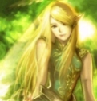

Forums galactiques > Taverne galactique : lieu de discussion informel > Miss Espérance [concours]
-Vyviane | 5 | |
-Dame Yuna | 18 | |
-Leia la sanguinaire | 5 | |
-Denmad | 3 | |
-Snow | 5 | |
-Hélène Whorstone | 1 | |
-Hatora la marchombre | 3 | |
-Encyclopédia | 6 | |
-Oropha | 2 | |
-Mystèrax | 16 | |
-Le Clan Yzocras | 3 | |
-milena | 4 | |
-saphira | 2 | |
Total : 73 vote(s) | ||
| syl10 Réputation à la taverne : 102  29/01 ETU 12:53 | Score : 4 Détails Et voilà le grand jour est arrivé.
A vous, les femmes, maintenant de nous montrer votre corps, votre personnalitée, votre déscription, enfin tout ceux que vous voulez!!! Nous remerçions nos sponsor: Kyo (Horohoro) et DarkDevil... Je rappel les prix: -1ère 4000ma + les inscriptions -2ème 5mo de CLA -3ème 1mo d CLA C'est pas Beautiful tout sa!?! Le défilé durera 5 jours, comme le vote! et que le défilé commence^^ Aller Mystèrax t'est la plus belle! | ||
| Dame Yuna Réputation à la taverne : 405  29/01 ETU 13:03 | Score : 4 Détails aller ces partis !!
Yuna s'avance sur la seine vetu d'un robe de soie blanche bocoup ouverte ^^ elle s'avance fasse au public et tourne sur le coté droit puit gauche bien le bonjour je suis Yuna, j'ais 18ans j'abite sur Inconnu qui est ma planette natal je pourai vous la faire visités a l'ocasion ;) je suis aussi la co gérante d'une entreprise nomée Fantasy Shop merci de m'avoir écouté et pour voté pur moi tapé 2 ;) Yuna fait un demi tour plutot gracieu et retourne deriere le ridau | ||
| Général_Louis Réputation à la taverne : 1323  29/01 ETU 13:14 | Score : 1 Détails "Hatora, Hatora, tu es la plus belle. Tu vas gagner."
| ||
| Rendillion Réputation à la taverne : 675  29/01 ETU 13:47 | Score : 1 Détails "Louis, l'expérience en Espérance ne s'est pas transformée pour toi en sagesse.
Au contraire, tu deviens sénile pour ne pas voir la splendeur de Sophie..." | ||
| syl10 Réputation à la taverne : 102 29/01 ETU 14:39 | Score : 1 Détails Oula grosse erreur pour saphira!!!
C'est enfète Saphiria! Encore désolé | ||
| DarkDevil Réputation à la taverne : 569  29/01 ETU 15:34 | Score : 3 Détails DarkDevil arriva... Il venait assister au concours.
Avant de franchir la porte, il entendit une douce voie dans sa tête... C'était la voie de Dame Myriam disant: DD!!! Si tu va au concours, tu ne dois pas regarder les concurrentes ou tu verra ce que une elfe peut faire en colère... DarkDevil ce disant "mais non, elle rigolait... Quoi que...". Puis il regarda le sol et alla à sa place... Vos mieux ne pas tenter le diable... Aller Yuna!!! | ||
| Rosa L. Réputation à la taverne : 1595  29/01 ETU 16:04  | Score : 0 Détails Et bien moi, je vais vous dire que toutes les femmes sont belles mais comme il faut choisir, je donne mon vote à Sophie.
| ||
| Essai Réputation à la taverne : 389  29/01 ETU 16:15 | Score : 0 Détails Mais qu'est-ce que c'est que ce vote ??
C'est incroyable de voir ce genre de chose...... | ||
| Anznül Réputation à la taverne : 50  29/01 ETU 16:17 | Score : 7 Détails c'est le fait de ne pas etre dedans qui vous dérange
( ou de ne pas etre belle ) << humour | ||
| Cesco Imperator Réputation à la taverne : 3122  29/01 ETU 16:19 | Score : 8 Détails T'es pas encore mort, toi ? ah non, c'est vrai, t'as eu une planète (peu de temps), du pognon et des flottes ( pas pour longtemps...)
Si t'as pas trouvé la sortie, c'est au fond, à droite... Aussi accrocheur qu'un morpion sur un poil pubien, Aussi macho qu'un latino du Moyen-Age, Aussi utile qu'un préservatif usagé, Pour vous, Ladies and Gentlemen... ESSAI !!! PS : à éviter, à ne pas fournir, personne non recommandable. | ||
| Rosa L. Réputation à la taverne : 1595 29/01 ETU 16:27 | Score : 4 Détails Je ne sais pas pourquoi mais quand je le vois, celui-là, j'ai des envies de meurtre....
Luttons ensemble pour l'éradication de l'Essai non concluant! Allez Sophie! | ||
| skipusien Réputation à la taverne : 188  29/01 ETU 16:31 | Score : 0 Détails Du calme Rosa!
:D Bon... je vote pour qui moi ??... | ||
| général locius Réputation à la taverne : 626  29/01 ETU 17:09 | Score : 0 Détails Allez le clan!!
Essai si je te trouves...t'es mort!! | ||
| Dame Myriam Réputation à la taverne : 27  29/01 ETU 17:20 | Score : 3 Détails Arrêtez de parler de ce parasite et encourageons tous YUNA
| ||
| -Zero- Réputation à la taverne : 172  29/01 ETU 17:22 | Score : 3 Détails Votons bien...
Votons YUNA Tu va gagner YUNA | ||
| Cesco Imperator Réputation à la taverne : 3122 29/01 ETU 17:27 | Score : 7 Détails Arf..Personne n'a inscrit Yul Harkonnen...et le pluralisme, alors ?...
| ||
| Denior Réputation à la taverne : 3266  29/01 ETU 18:22 | Score : 2 Détails Oui tu as raison Cesco. Ce sectarisme n'est Pasc tolérable.....
| ||
| nounours1er Réputation à la taverne : 5  29/01 ETU 18:42 | Score : 0 Détails Commandants,Commandantes
Ce VOTE est tres dur car Ces Commandantes sont toutes aussi BELLES , d'une tres grande beautée. Mais j'ai quand meme voté pour l'une d'entre elles. CORDIALEMENT. | ||
| Oropha Réputation à la taverne : 32  29/01 ETU 18:43 | Score : 2 Détails Habiller d'une de c'est plus belle tenue Oropha trouva bizarre que personne d'autre à part Yuna n'est encore défiler ce qui dans un sens n'était pas logique mais elle n'y pris plus attention quand on lui dit que ce fut à elle
Elle sortit de l'ombre par une trappe qui la faisait apparaître juste au dessus de la piste .Oropha s'avança timidement . Sa robe était bleu et blanche en soi comme à sa grande habitude. Au bout de la piste ne sachant pas vraiment quoi faire imita Yuna et dit : Bonjour a tous Je suis Oropha, j'ai 16ans j'habite sur Xeno11 qui est ma planète natal Je suis une jeune commerçante de la guilde et si un jour vous vous balader dans mon système penser a passer. Merci de votre présence et voter 9 Oropha fit un demi tour plutôt élégant et redescendit dans la loge | ||
| Dame Yuna Réputation à la taverne : 405 29/01 ETU 18:49 | Score : 0 Détails joli RP Oropha;)
sinon ces bete que le vote est eu lieu avant les defillé xD enfin bon depechées vous les filles venées remuées vos fesses sur la piste comme moi et Oropha ;) |
Forums galactiques > Taverne galactique : lieu de discussion informel > Miss Espérance [concours]